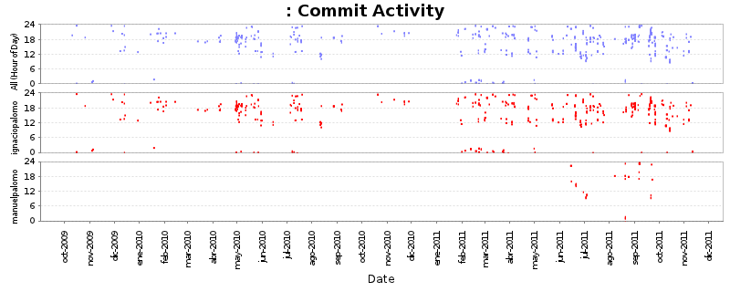
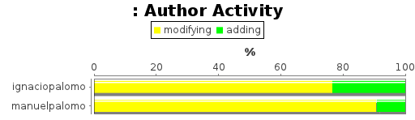
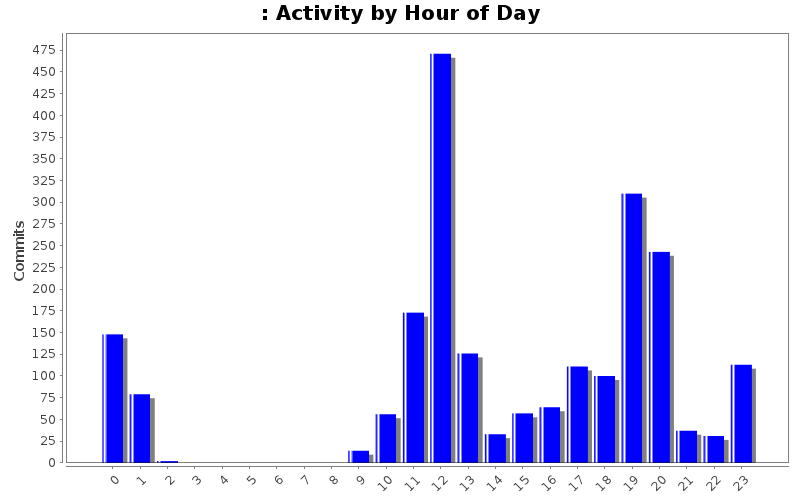
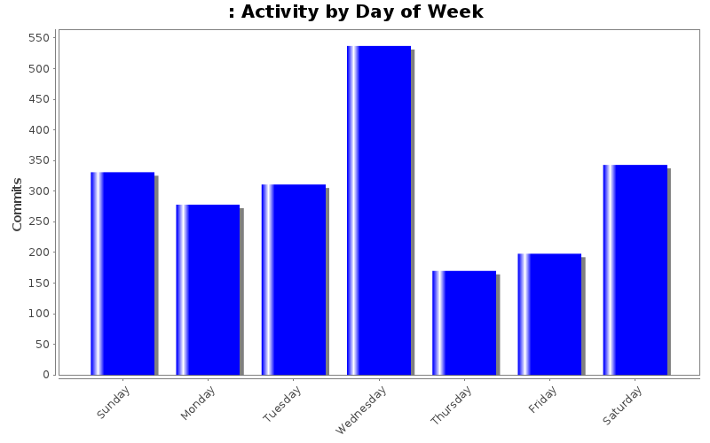

Developers
- Number of Developers:
- 2
Last 12 Months
| Author |
Up to 11/2010 |
12/2010 |
1/2011 |
2/2011 |
3/2011 |
4/2011 |
5/2011 |
6/2011 |
7/2011 |
8/2011 |
9/2011 |
10/2011 |
11/2011 |
| Totals |
11297 (100.0%) |
0 (-) |
336 (100.0%) |
436 (100.0%) |
452 (100.0%) |
614 (100.0%) |
287 (100.0%) |
23446 (100.0%) |
68511 (100.0%) |
84386 (100.0%) |
96099 (100.0%) |
34986 (100.0%) |
86 (100.0%) |
| ignaciopalomo |
11297 (100.0%) |
0 (-) |
336 (100.0%) |
436 (100.0%) |
452 (100.0%) |
614 (100.0%) |
287 (100.0%) |
16596 (70.8%) |
64047 (93.5%) |
65862 (78.0%) |
80525 (83.8%) |
34986 (100.0%) |
86 (100.0%) |
| manuelpalomo |
0 (0.0%) |
0 (-) |
0 (0.0%) |
0 (0.0%) |
0 (0.0%) |
0 (0.0%) |
0 (0.0%) |
6850 (29.2%) |
4464 (6.5%) |
18524 (22.0%) |
15574 (16.2%) |
0 (0.0%) |
0 (0.0%) |
Developer Activity


Activity by Clock Time

